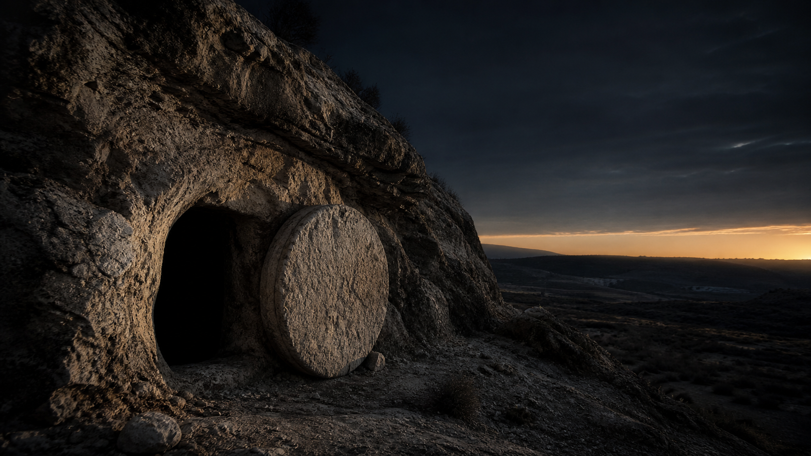
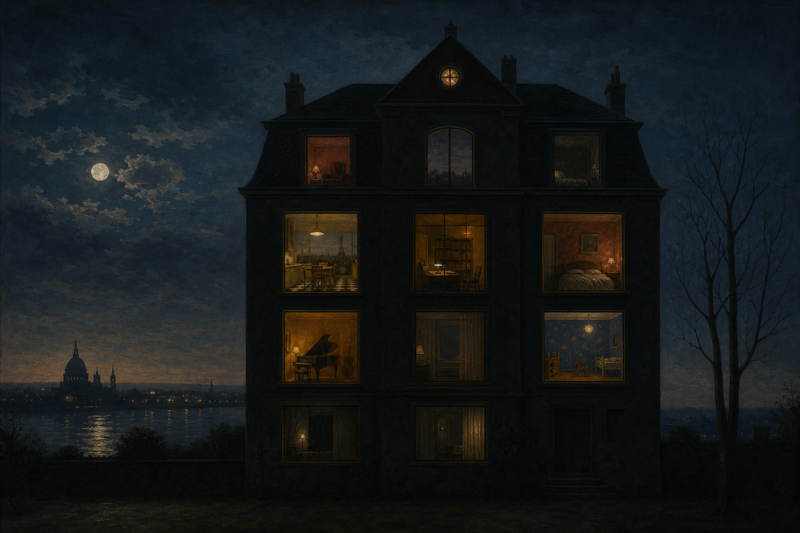
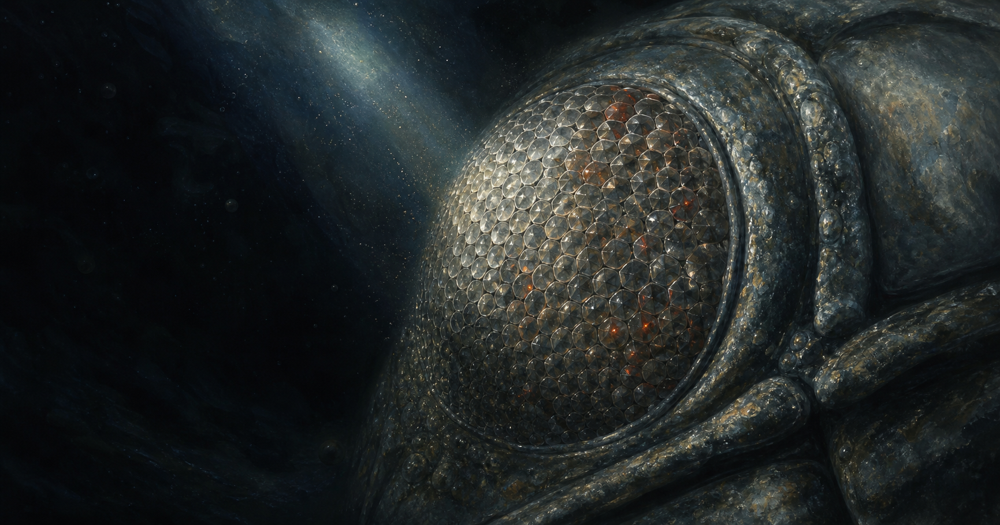

A small library of big questions
Arguments that can
afford the light.
Full-length Catholic philosophical and theological essays, read slowly and presented as visual arguments. Each volume keeps its complete source text in view while giving the reader maps, definitions, objections, and room to think.
 Volume 01
Volume 01
Goodness Itself: The Whole Case
The strongest argument that God is not merely good but Goodness — run through every objection an unsparing skeptic could raise, and written so that you don't need a philosophy degree to follow a single step of it.
Enter the reading ↗
Volume 02The Resurrection: The Whole Case
An essay for the reader who wants the strongest argument that Jesus rose from the dead — and every objection to it at full strength, hidden from no one.
Enter the reading ↗
Volume 03The World Is Not Enough
Enter the reading ↗
Volume 04Not One Sparrow
A meditation on the suffering of animals and the mercy of God
Enter the reading ↗Four volumes, each kept whole: maps, definitions, objections, and room to think.